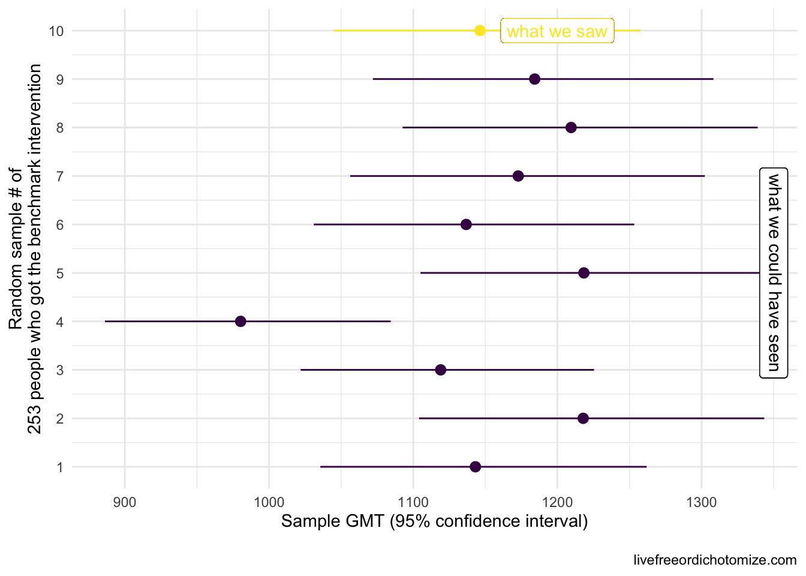
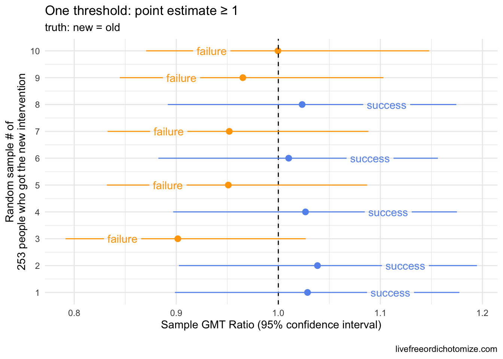
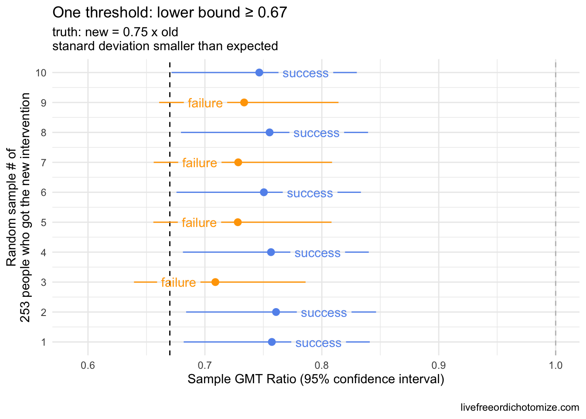
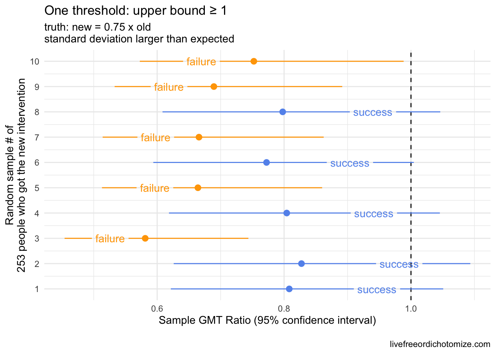
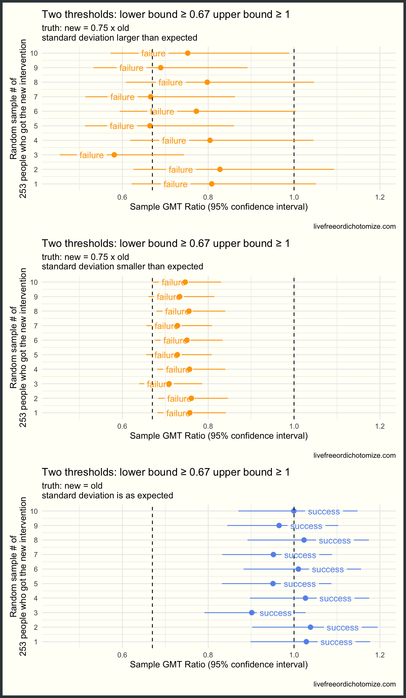
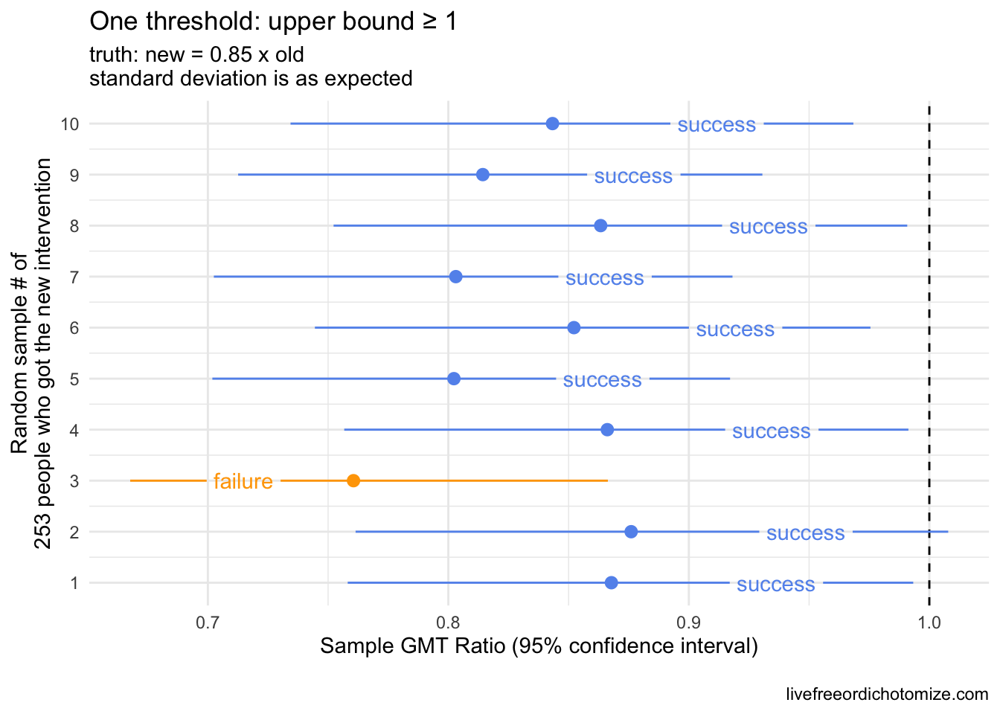
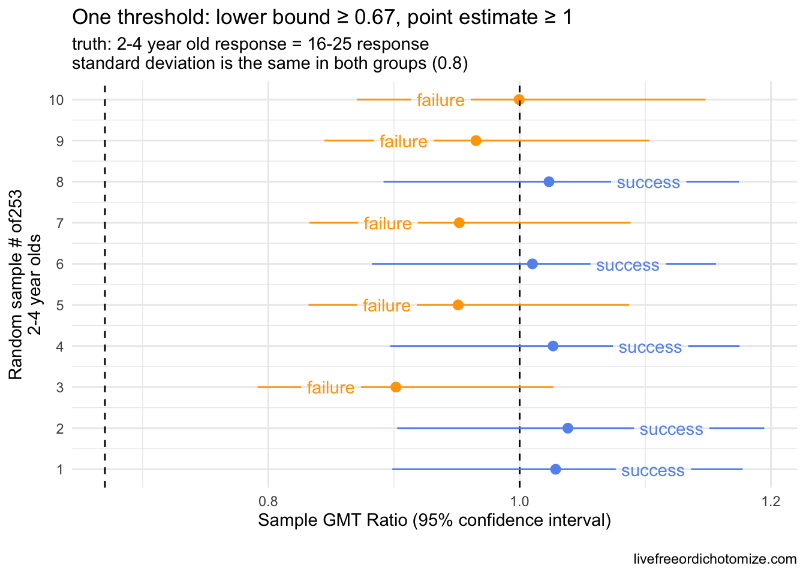

Exploring the impacts of noninferiority trial thresholds
This post explores the impact of setting particular criteria for ‘success’ in clinical trial designs, with a specific example from the recent vaccine immunobridging trials.
This post explores the impact of setting particular criteria for “success” in clinical trial designs. A common study design is a “non-inferiority” trial. The goal here is to show that some intervention is not inferior, that is not worse, than some already approved intervention, by some specific definition of not worse. While this may sound straightforward, it can be tricky! Especially because in all clinical trials we are working with a sample of individuals, so there is necessarily uncertainty around the estimates we can calculate. Also, the definition of not worse can vary.
The standard error is just the {standard devation} divided by the square-root of the sample size, \(n\), \(\frac{sd}{\sqrt{n}}\)
In statistics speak, this uncertainty is often quantified as a standard error, a measure that takes into account both the standard deviation of our outcome of interest and the number of people we have measured this outcome on. What do I mean? Here is an example.
GMT: geometric mean titer. This is a measure of the antibody titers. We use the geometric mean because this data is quite skewed (it is also why you typically see it plotted on the log scale). For those of you who ❤️ math, the equation for the geometric mean is just \(\exp\{\frac{\sum_{i=1}^n\textrm{log}(x_i)}{n}\}\)
Let’s say we want to know whether new intervention is not inferior to benchmark intervention with respect to some measure, in this case we are going to use the geometric mean titers (GMT), a common measure of antibody response. In this first example, the truth is these two interventions yield the same GMT, that is, they are equivalent, so new intervention is not inferior to benchmark intervention. Let’s say we have a sample of 253 people who received the benchmark intervention. The truth is that GMT is 1142.5 with a standard deviation of 0.8. We won’t see these exact results in our benchmark intervention group since we’re just looking at one sample of 253. The plot below shows what our 253 folks could look like if we were to collect these data 10 different times. The circles represent the GMT in each sample and the lines show the 95% confidence intervals.
Note: If we were trying to conduct a hypothesis test to establish whether the mean was different from 1142, and we collected these same 10 samples, the 4th sample would result in a Type 1 error, that is we’d reject the null hypothesis that the mean is equal to 1142 even though that is the truth. When using 95% confidence intervals, we expect to see a Type 1 error 5% of the time.
In reality, we would only see one of these results. Notice how some of these estimates differ from what we know is the truth (a GMT of 1142), for example the 4th sample had a geometric mean of 980 – this is expected. In fact, based on what we know about confidence intervals, if we repeat this process 100 times, we’d expect about 5 of these intervals to not contain 1142 at all. Notice the width of the confidence intervals is generally the same. This is determined by the standard deviation (which here is 0.8) and the sample size (253).
Ok, so let’s say we observed the 10th sample in the plot above (GMT: 1146.5 (95% CI: 1257.2, 1045.5)). We want to show that some new intervention yields a GMT that is not inferior (not worse) than this benchmark intervention. One way we could do that is collect data on the new intervention, compare it to the old, and set some criteria for “success”. What would make this new intervention not inferior? Let’s see what happens if we set our criteria for success to be that the geometric mean titers among our sample of those in the new intervention group is not less than the geometric mean we observed in our benchmark intervention sample. Another way to look at this is to look at the ratio between our two geometric means, the GMT in the new intervention divided by the GMT in the old intervention group. If this ratio is equal to one, they are the same, if the ratio is less than 1, the new intervention is deemed “worse” (inferior) and if the ratio is greater than 1, the new intervention is better. Another way to state this criteria is that the GMT ratio needs to be \(\ge 1\).
Scenario 1: By “non-inferiority” we mean the observed point estimates will be equal or the point estimate for the new group will be higher
Threshold: GMT ratio \(\ge 1\)
I am going to generate some new intervention samples, remember we only observe one of these in reality. I am generating them from the same distribution as the old intervention, so the truth here is that the two are equal (and thus also non-inferior). Remember that to generate these samples we also need to know the sample size. Let’s assume the sample size is the same (253).

The plot above shows 10 random samples from our new intervention. Remember that these were generated exactly like our old intervention, so the truth is that they are equivalent (and thus it is also true that the new intervention is not inferior, not worse, than the old). Notice here, 50% of the samples “failed” (in orange in the plot above) by our criteria that the geometric mean (the point estimate) of our new intervention had to be greater than or equal to our observed geometric mean in the old intervention. This is exactly what we’d expect to happen! Because there is some random chance involved (we are only looking at a sample), the probability of falling on either side of a point estimate is going to be a coin toss when the “truth” is centered there.
Often, the criteria for non-inferiority trials is set based on a lower bound threshold instead. For example, we could say we want to have some certainty that the new intervention is not some percent worse than the old. Maybe we set our lower bound to 0.67. This would mean that in order to be deemed a “success” the lower bound of our geometric mean ratio between the old and new interventions would need to exceed 0.67. Looking at the plot above, this seems easy! However, if we assume the same standard deviation (0.8) and same sample size (253), we can achieve this threshold even if the new intervention is statistically significantly worse. Let’s see that.
Scenario 2: By “non-inferiority” we mean we can have some level of confidence that the new intervention is not more than 67% worse than the old
Threshold: GMT ratio lower bound \(\ge 0.67\)
Now I am going to assume that the truth is that the new intervention is only 75% as good as the old, meaning the true ratio between the two is 0.75. This would equate to being around 6 standard errors worse than equal, so pretty bad. Let’s generate some samples under this assumption and see how we do.

Our lower bound threshold of 0.67 “caught” our inferior samples ~70% of the time here (in orange), but notice there were three samples that would be considered “successful” by this metric (blue), even though the full confidence interval falls below 1. How likely something like this is to occur depends on two things:
- the standard deviation of the outcome in
new interventiongroup - the sample size of the
new interventiongroup
Often clinical trials need to prespecify their sample size, so we can guard against one of these, but the standard deviation is often just a guess. For example, what if the standard deviation in the new intervention group was much smaller, say half of the standard deviation in the old intervention group. Let’s see what that looks like.

Notice in the plot above with the smaller standard deviations, the confidence intervals shrunk! Now we have 60% successes, all with upper bounds less than 1 üò±. This is why often a second criteria is set to guard against this possibility. In the past, I have often seen this as a criteria for the upper bound ‚Äì for example, you could require that the upper bound not be less than 1 to exclude the possibility of a ‚Äúsuccess‚Äù when the new intervention is in fact statistically significantly worse. Why not only set an upper bound criterion? If we did that, we could have the opposite scenario where the true standard deviation is much larger than expected, so despite the upper bound being above one, the confidence interval spans a very large range (like below!).
Scenario 3: By “non-inferiority” we mean the new intervention is not statistically significantly worse than the old intervention
Threshold: GMT ratio upper bound \(\ge 1\)

Including both criteria would guard against this. Let’s look at that across all of the scenarios we’ve explored so far.
Scenario 4: By “non-inferiority” we mean we can have some level of confidence that the new intervention is not more than 67% worse than the old and the new intervention is not statistically significantly worse than the old intervention
Thresholds: GMT ratio lower bound \(\ge 0.67\) AND GMT ratio upper bound \(\ge 1\)
Remember, I’m showing you 10 different possible sampling scenarios generated under the same “truth”. In reality, we’d only observe one of these. The reason I’m showing 10 is so you can see the probability of success or failure based on the criteria and the truth.

Beautiful! Now we are failing when we should be, regardless of our standard deviation, and succeeding when we should be (when the truth is that the two groups are the same). What we’ve seen so far is similar to how the immunobridging Pfizer trial was designed to evaluate vaccines in kids. Because Pfizer didn’t think they would have enough time or participants to accurately estimate the efficacy of the vaccine in young children, they instead designed a trial to compare their antibody response to the antibody response seen in 16-25 year olds, for whom they were able to demonstrate efficacy. The thinking being: if the antibody levels in kids is comprable to that in 16-25 year olds, then hopefully the efficacy will be comparable too. The issue, of course, is what do they mean by comparable (or not inferior). Originally they designed this with two thresholds: the lower bound needed to be \(\ge 0.67\) and the point estimate needed to be \(\ge 0.8\). This is similar to scenario 4, but there are important differences, which brings me to scenario 5!
Scenario 5: By “non-inferiority” we mean we can have some level of confidence that the new intervention is not more than 67% worse than the old and the new intervention and even more confidence that it is not more than 80% worse than the old intervention
Thresholds: GMT ratio lower bound \(\ge 0.67\) AND GMT ratio point estimate \(\ge 0.8\)
Fixing a non-inferiority bound at a point estimate introduces some complications. By not taking the upper bound into account, we don’t fully guard against seeing a statistically significantly worse result that “succeeds” by our criteria. For example, consider the scenario where the “truth” is that the new intervention is 85% as good as the old. This passes our definition of “non-inferiority”, but we could end up with many cases where the new intervention is statistically significantly worse but still “successful”. Much of these decisions need to be grounded both in the statistics and the science. If it is deemed scientifically acceptable that generating 85% of an antibody response is ok, then this is a fine threshold.

This will succeed 90% of the time, but notice that but notice that 8 of the 9 “successes” the confidence interval indicates that the intervention is statistically significantly worse.
It turns out, after Pfizer finished their 5-11 trial, the FDA requested that they move this second threshold to be more stringent.. Instead of needing a point estimate \(\ge 0.8\), they now needed a point estimate \(\ge 1\).
This is where things get tricky! Recall from the very first scenario that we looked at that setting a threshold based on the point estimate like this will fail 50% of the time even if the truth is that the two groups are exactly equal. By imposing this new threshold, the FDA is essentially requiring that the antibody response in children by superior to that in 16-25 year olds, not just not inferior. In addition, setting this threshold like this essentially renders the lower bound moot unless the variability in antibody response is much larger in young children compared to 16-25 year olds. In fact, in order for that “lower bound \(\ge 0.67\)” threshold to be invoked while the “point estimate \(\ge 1\)” succeeds, the actual standard deviation in the young children’s antibody titers would need to be about 4 times that observed in the older cohort. This threshold (the need to have the point estimate \(\ge 1\)) basically sets a large “weight” on the younger antibody response needing to be much stronger than that observed in the older cohort. Let’s take the 2-4 year olds as an example.
Scenario 6: By “non-inferiority” we mean we can have some level of confidence that the new intervention is not more than 67% worse than the old and the new intervention and even more confidence that it is not any worse than the old intervention
Thresholds: GMT ratio lower bound \(\ge 0.67\) AND GMT ratio point estimate \(\ge 1\)
If we think that an antibody response exactly equal to that seen by 16-25 year olds is sufficient to deem this vaccine non inferior, then this is not the right threshold, as a trial testing this way will fail 50% of the time. That is, the chance of failing is a coin toss, even if the two groups are exactly equal. Below shows this again. Remember for a given trial, we are only lucky enough to see one of these outcomes in the plot below; I am showing 10 so you can see the variation based on the sampling variability.

Statistically, in order to have a 85% chance of “success”, the truth would need to be that the antibody response in kids is ~1 standard error higher compared to 16-25 year olds. This is based on basic normal theory. It turns out if a variable is log normally distributed, the geometric mean is equivalent to the median of the distribution, which ties to the mean of the normal distribution. Therefore, we can use basic normal theory to understand the impact of requiring the point estimate of a distribution to be greater than some value. Assuming that the truth is that this point estimate (the GMT ratio) is 1 \(\times\) x [standard errors], and you take a sample from a log normally distributed population, the probability that the GMT ratio that you observe is 1 is equal to qnorm(x). For example, if the truth is that the GMT ratio is 1 \(\times 1.96\) [standard errors], and you ran this trial a bunch of times, you would expect a “success” 95% of the time. (The 5% of the time that you saw a “failure” would be considered a Type II error).
SO what does this mean? Well it depends on what the standard deviation ends up being for 2-4 year old antibody response. If it is the same as 16-25 year olds, in order to avoiding making a Type II error more than 15% of the time, the geometric mean of the antibody response in 2-4 year olds would need to be 5-6% higher than what was observed in 16-25 year olds. If their standard deviation is actually larger this will increase, for example if it was 2, the true antibody response in 2-4 year olds would need to be ~ 14% higher.
As many have pointed out, it is not uncommon for pediatric trials to be held to a higher standard, often requiring efficacy beyond what is required of adults due to an appropriate caution against intervention in an often vulnerable group. I fully believe that the regulators that requested this had every best intention in doing so. In this particular case, however, this type of threshold can potentially lead to the opposite effect. By requiring the younger children to mount a higher antibody response than the older cohort in order to pass regulatory hurdles, we may be inadvertently pushing towards higher dosing, for example.
Is this why the 2-4 year old vaccine failed previously? It’s not totally clear since the data hasn’t been released, however based on the tid bits we’ve gotten from media reports, I don’t think so. The New York Times reported, for example, that the 2-4 vaccine only elicited 60% of the response compared to the 16-25 year olds, suggesting that it would have failed by the lower bound criteria alone. So why does this matter? Presumably, these thresholds will be used to compare the post-3rd dose response to the 16-25 year olds as well – does it make sense to require the under 5s to have a stronger antibody response than the 16-25 year olds? Especially with no other option for protection via a vaccine for this age group, I would say no.